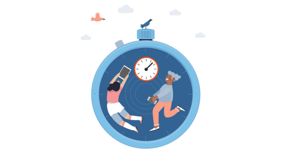

This module helps users understand how much daily screen use can affect sleep, focus, eye comfort, and productivity.

Higher values indicate stronger need for structured breaks and reduced non-essential use.